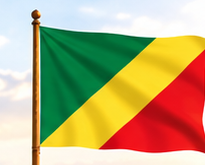
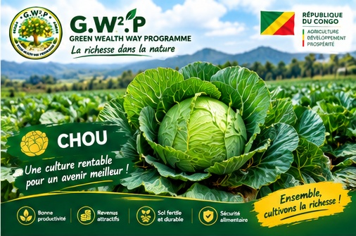
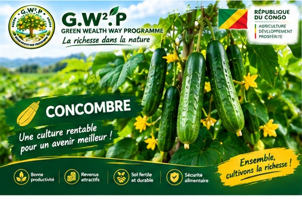
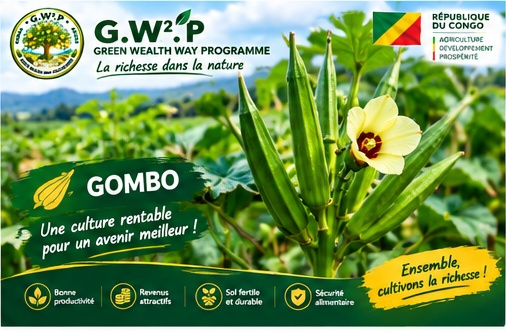
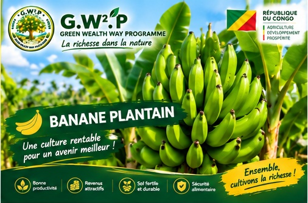
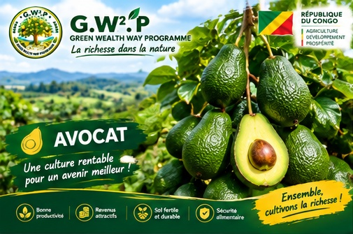
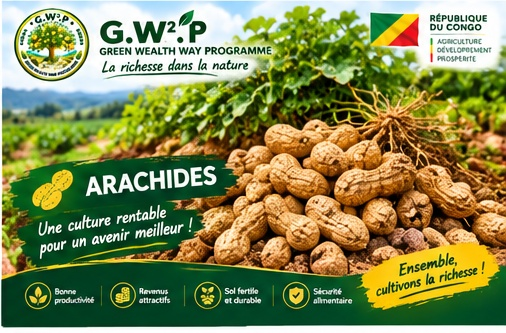
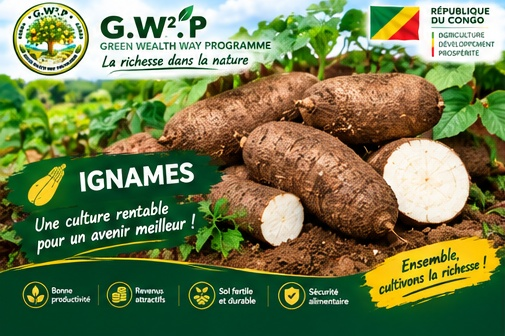
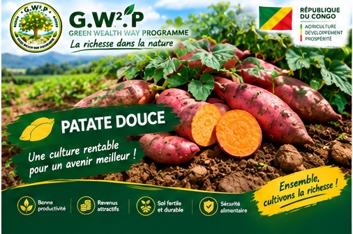

CÉRÉALE
Maïs
Culture céréalière à développer dans les zones et conditions adaptées.

NOUVEAU PROGRAMME AGRICOLEDéveloppons ensemble une agriculture créatrice de valeur en République du Congo, grâce à un partenariat gagnant-gagnant entre financeurs, propriétaires de terres et partenaires du projet.
Une approche personnalisée selon la zone, les terres disponibles, les cultures adaptées et les moyens mobilisés.

G.W².P accompagne la mise en valeur des terres agricoles en réunissant les acteurs nécessaires à la réalisation de projets structurés.
Les ressources, les terres et les compétences sont réunies autour d'une organisation commune.
Chaque collaboration est étudiée selon les caractéristiques et les besoins du projet.

Découvrez les principales productions présentées par G.W².P.
Culture céréalière à développer dans les zones et conditions adaptées.

Culture destinée à la production alimentaire et à la valorisation agricole.

Production maraîchère diversifiée selon les besoins et les caractéristiques du terrain.

Culture fruitière à intégrer dans les zones favorables et selon le cycle choisi.

Production maraîchère à organiser avec un suivi adapté du semis à la récolte.

Culture présentée dans le catalogue agricole du projet G.W².P.

Culture maraîchère pouvant être étudiée selon la zone et le projet.

Production fruitière et alimentaire à valoriser dans les espaces appropriés.

Culture fruitière à intégrer dans une stratégie agricole adaptée au terrain.

Culture à intégrer selon les conditions du sol, la zone et les débouchés.

Culture vivrière à valoriser dans les zones adaptées à sa production.

Culture vivrière pouvant compléter la diversification de l'exploitation.
Présentation des espaces disponibles, exploités et des équipements nécessaires à leur développement.
Étude du potentiel, de la zone et des cultures adaptées.
Organisation des activités agricoles et suivi de la production.

Solutions d'irrigation adaptées aux besoins de la production.
Une démarche structurée pour transformer un potentiel agricole en projet concret.
Identifier la zone, le terrain, les ressources et les possibilités agricoles.
Choisir les cultures et organiser les besoins, le calendrier et les équipes.
Mettre en œuvre les opérations agricoles avec un suivi régulier.
Organiser la récolte et la valorisation de la production.
Le choix des cultures et l'ampleur du projet sont adaptés aux moyens financiers mobilisables.

Chaque projet peut être étudié à partir de ses besoins réels : préparation du terrain, semences, matériel, irrigation, entretien, main-d'œuvre et récolte.
Une présentation visuelle des activités et du potentiel agricole.

Vous êtes financeur, propriétaire de terrain ou partenaire ? Présentez votre projet et étudions les possibilités de collaboration.
Programme : G.W².P — Green Wealth Way Programme
Promoteur : Mr Ahesrom Louange NOMARITH
Zone : République du Congo
Téléphone : 242.06.429.86.80
Signature : La richesse dans la nature.